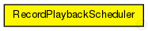
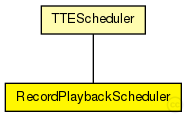

This documentation is released under the Creative Commons license
This documentation is released under the Creative Commons licenseExtended Scheduler module. The module allows to record the oscillator behaviour when the read variable is set to true. The same behaviour can then be replayed when setting write to true. This can speed up the simulation significantly as the it makes it unnecessary to simulate complex modules such as synchronisation or oscillator behaviour more than once.
See also: TTEScheduler
Author: Lazar Todorov, Till Steinbach
The following diagram shows usage relationships between types. Unresolved types are missing from the diagram. Click here to see the full picture.
The following diagram shows inheritance relationships for this type. Unresolved types are missing from the diagram. Click here to see the full picture.
| Name | Type | Description |
|---|---|---|
| TTEScheduler | simple module |
TTEthernet scheduler module. The module allows to register Events using the registerEvent(SchedulerEvent) method. Allowed Events are: |
| Name | Type | Default value | Description |
|---|---|---|---|
| tick | double | 80ns |
Length of a tick |
| max_drift | double | 16ps |
Maximum clock drift (e.g 16ps for 200ppm at 80ns per tick) |
| drift_change | double | uniform(-1ps,1ps) |
Clock drift change for the next cycle, you are free to use your desired distribution |
| current_tick | double | tick |
Current length of a tick (with imprecission) |
| cycle_ticks | int | 37500tick |
Number of ticks for one cycle |
| id | int | 0 |
Id for recording/playback |
| read | bool | false |
Playback drifts |
| write | bool | false |
Record drifts |
| Name | Value | Description |
|---|---|---|
| display | i=block/cogwheel | |
| class | RecordPlaybackScheduler |
| Name | Title | Source | Record | Unit | Interpolation Mode |
|---|---|---|---|---|---|
| newCycle | Start of cycle | count, vector | |||
| currentDrift | Current drift | vector | s |
// // Extended Scheduler module. The module allows to record the oscillator behaviour // when the read variable is set to true. The same behaviour can then be replayed // when setting write to true. This can speed up the simulation significantly as the // it makes it unnecessary to simulate complex modules such as synchronisation or // oscillator behaviour more than once. // // @see TTEScheduler // // @author Lazar Todorov, Till Steinbach simple RecordPlaybackScheduler extends TTEScheduler { parameters: @class(RecordPlaybackScheduler); // Id for recording/playback int id = default(0); // Playback drifts bool read = default(false); // Record drifts bool write = default(false); }
This documentation is released under the Creative Commons license